Embodied Spatial Intelligence
Spatial understanding, scene imagination, and decision making for unmanned systems.
Southeast University · Embodied AI · Vision-Language Navigation
I am an Associate Professor and Ph.D. supervisor at the School of Automation, Southeast University. I received my Ph.D. in Engineering from Iowa State University in 2016 and joined Southeast University in 2017.
My research focuses on embodied spatial intelligence for unmanned systems, visual navigation, robot learning, autonomous localization, and multimodal environmental perception and reasoning. As first or corresponding author, I have published papers in venues including IEEE TPAMI, IEEE TMM, IEEE TNNLS, IEEE RA-L, ICLR, CVPR, ECCV, and AAAI.
Spatial understanding, scene imagination, and decision making for unmanned systems.
Navigation policies, trajectory forecasting, and language-guided robot learning.
Cross-view & cross-modal representation learning.
Event-stream 3D spatial understanding.
# equal contribution, * corresponding author.
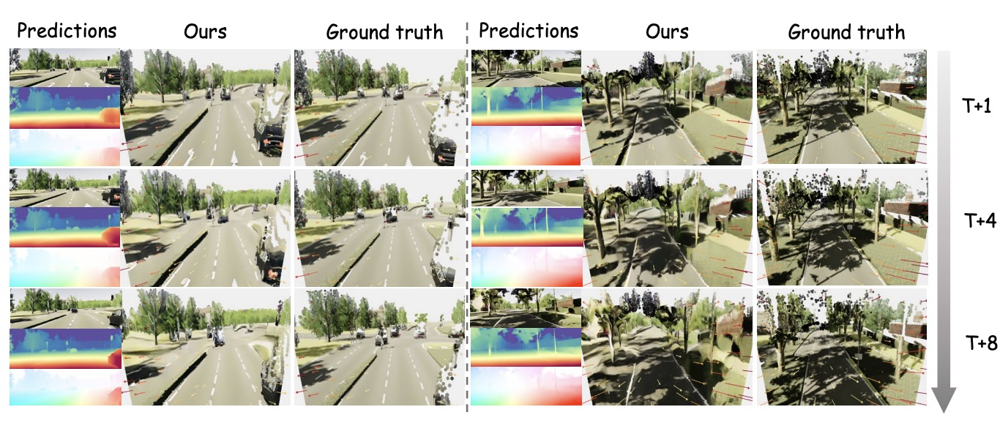
ECCV'26UniDynamics: Event-RGB Fusion for Unified Future 4D Dynamic Scene Generation.
Daikun Liu#, Xin Zhan#, Teng Wang*, Xiaoping Wang*, Changyin Sun.
European Conference on Computer Vision (ECCV), 2026.
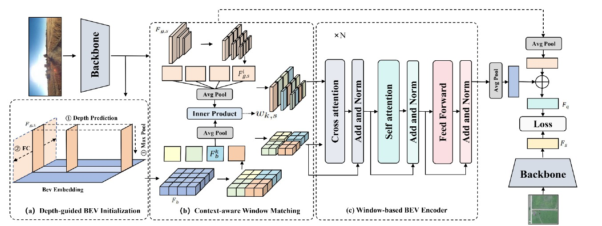
NN'26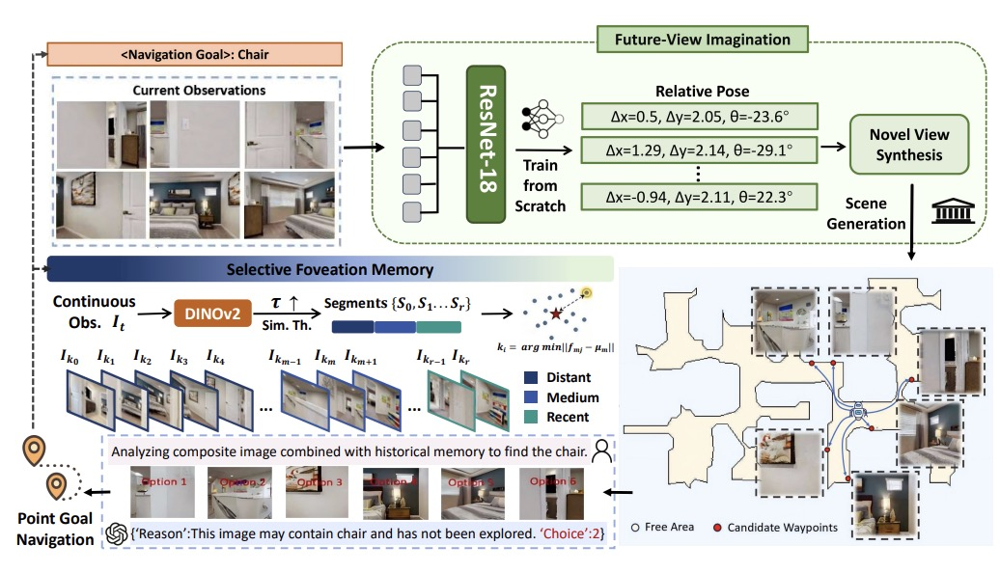
TPAMI'26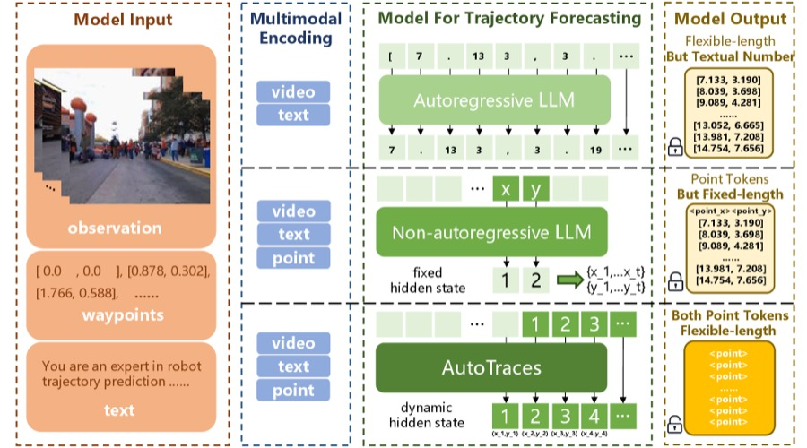
CVPR'26AutoTraces: Autoregressive Trajectory Forecasting via Multimodal Large Language Models.
Teng Wang*, Yanting Lu, Ruize Wang.
IEEE/CVF Conference on Computer Vision and Pattern Recognition (CVPR), 2026. arXiv
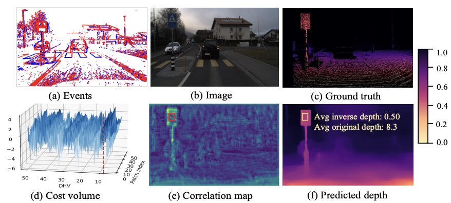
CVPR'26Depth Hypothesis Guided Iterative Refinement for Event-Image Monocular Depth Estimation.
Daikun Liu, Teng Wang*, Changyin Sun.
IEEE/CVF Conference on Computer Vision and Pattern Recognition (CVPR), 2026. Highlight PDF
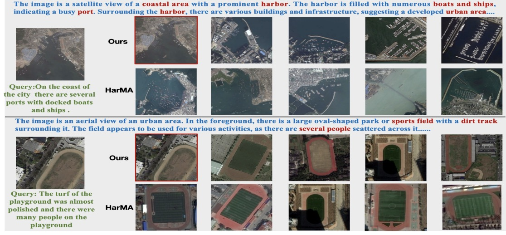
TMM'26Multimodal Large Language Models Assisted Hierarchical Image-Caption Fusion for Remote Sensing Image-Text Retrieval.
Teng Wang*, Ruize Wang, Lingquan Meng, Changyin Sun.
IEEE Transactions on Multimedia (TMM), 2026. DOI
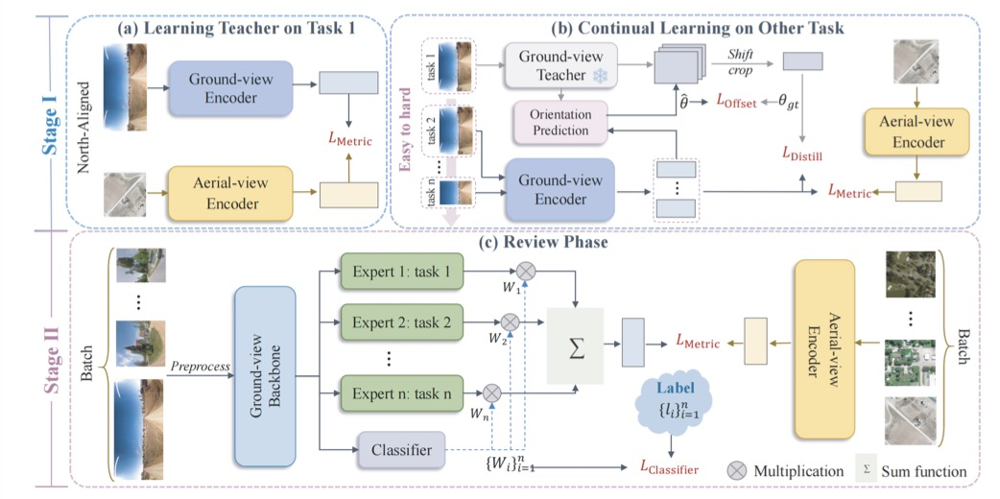
AAAI'26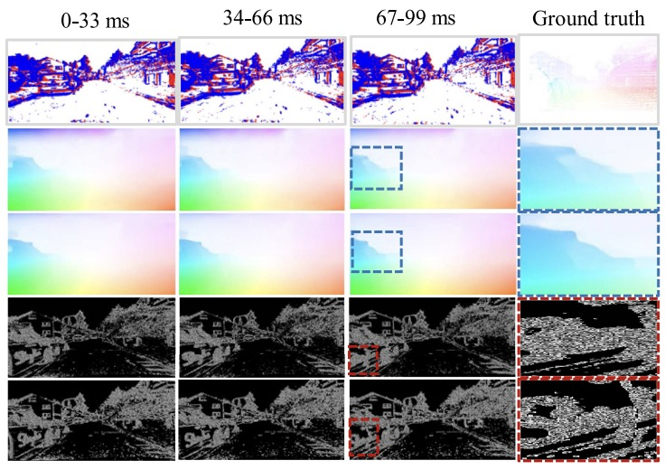
RA-L'25Seeing Beyond Local Events: Recurrent Optical Flow Estimation with Hierarchical Motion Aggregation.
Daikun Liu, Teng Wang*, Changyin Sun.
IEEE Robotics and Automation Letters, 10(11): 11721-11728, 2025.
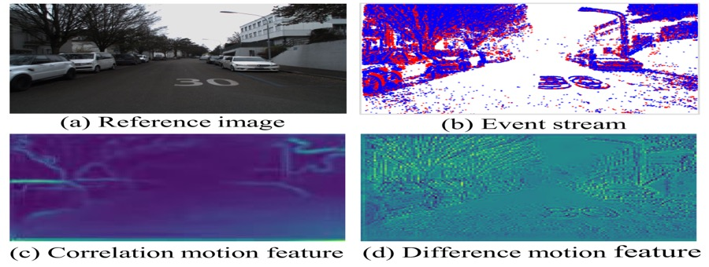
CVPR'25EDCFlow: Exploring Temporally Dense Difference Maps for Event-based Optical Flow Estimation.
Daikun Liu, Lei Cheng, Teng Wang*, Changyin Sun.
IEEE/CVF Conference on Computer Vision and Pattern Recognition (CVPR), 2025. arXiv
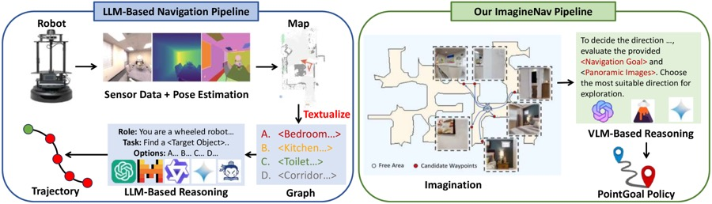
ICLR'25ImagineNav: Prompting Vision-Language Models as Embodied Navigator through Scene Imagination.
Xinxin Zhao#, Wenzhe Cai#, Likun Tang, Teng Wang*.
International Conference on Learning Representations (ICLR), 2025. arXiv
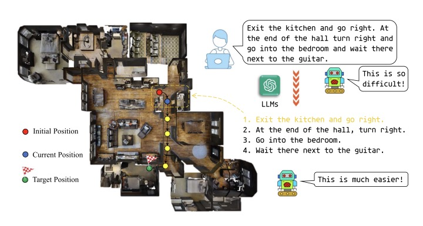
RA-L'25Boosting Efficient Reinforcement Learning for Vision-and-Language Navigation with Open-Sourced LLM.
Jiawei Wang, Teng Wang*, Wenzhe Cai, Lele Xu, Changyin Sun.
IEEE Robotics and Automation Letters, 10(1): 612-619, 2025.
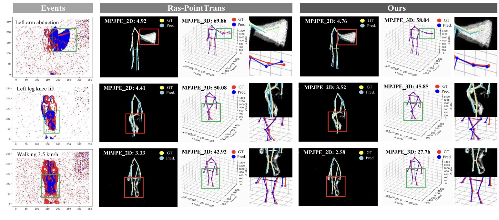
TCSVT'24Voxel-based Multi-scale Transformer Network for Event Stream Processing.
Daikun Liu, Teng Wang*, Changyin Sun.
IEEE Transactions on Circuits and Systems for Video Technology, 34(4): 2112-2124, 2024.
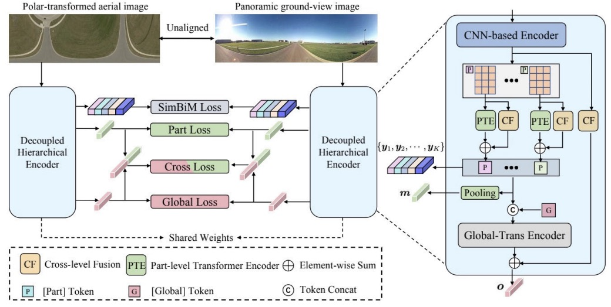
TCSVT'24DeHi: A Decoupled Hierarchical Architecture for Unaligned Ground-to-Aerial Geo-localization.
Teng Wang, Jiawen Li, Changyin Sun*.
IEEE Transactions on Circuits and Systems for Video Technology, 34(3): 1927-1940, 2024.
A Coarse-to-Fine Approach for Dynamic-to-Static Image Translation.
Teng Wang*, Lin Wu, Changyin Sun.
Pattern Recognition, 123: 1-14, 2022.
Attention-based Road Registration for GPS-denied UAS Navigation.
Teng Wang, Ye Zhao, Jiawei Wang, Arun K. Somani, Changyin Sun*.
IEEE Transactions on Neural Networks and Learning Systems, 32(4): 1788-1800, 2021.